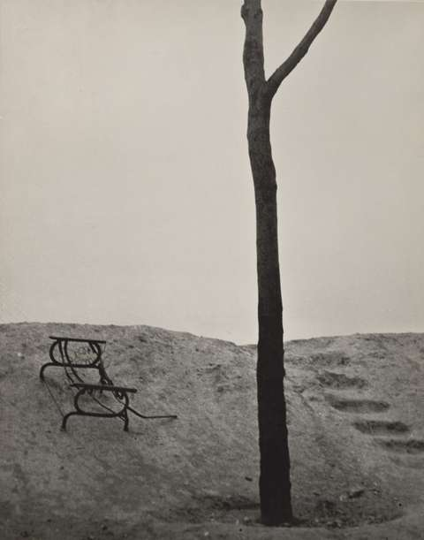

Terrain vague
French landscape theoretical term for indeterminate space, defined by Spanish architect, Ignasi de Solà- Morales, stating:
It is impossible to capture in a single English word or phrase the meaning of terrain vague. The French term terrain connotes a more urban quality than the English land; thus terrain is an extension of the precisely limited ground fit for construction, for the city.” (de Solà- Morales, 2013, p. 26).
Breaking down the etymology
- The term has duality stemming from Latin: “Vague descends from vacuus, giving us “vacant” and “vacuum” in English, which is to say “empty, unoccupied,” yet also “free, available, unengaged.”
- A second meaning superimposed on the French vague derives from the Latin vagus, giving “vague” in English, too, in the sense of “indeterminate, imprecise, blurred, uncertain.” (de Solà- Morales, 2013, p. 26).
- Solà- Morales uses the french term ‘terrain vague’ because the English vocabulary for these pockets of vacant landscape have negative connotations such as wasteland.
My favourite explanation
Stanka Radović has a clear definition in the essay ‘on the threshold’ - an essay using the Andrei Tarkovsky 1979 film, Stalker, to explore the term as a utopia:
“... terrain vague escapes and challenges rigid definitions. Is it urban or is it natural? Is it a concept or a concrete place? Free or forlorn? The term “terrain vague” translates into English as “wasteland,” “derelict area,” or “vacant land,” and refers to abandoned or unoccupied portions of urban land that remain available for spontaneous use.” (Radović, 2013, p. 114)
Early photography
Man Ray Etude pour terrain vague , 1929

Before de Solà- Morales, Man Ray, inspired by Eugène Atget, captioned these photographs 'Terrain Vague'.
Bibliography
Radović, S. (2013) ‘On the Threshold: Terrain Vague as Living Space in Andrei Tarkovsky’s Stalker’, Terrain Vague: Interstices at the Edge of the Pale.
de Solà- Morales, I. (2013) ‘Terrain Vague’, Terrain Vague: Interstices at the Edge of the Pale.
Date
8/9/2020
Topics:
interfacial space, terrain vague, urban spaces, marginal spaces,
Backlinks
Annihilation (2018)
Notes on Alex Garland’s 2018 science fiction movie, Annihilation, and [[Terrain vague(term)]].
Marginal Space
- [[Terrain vague(term)]] - imprecise spaces.
Stalker (1979)
Notes on Tarkovsky’s 1979 science fiction movie, Stalker, and [[Terrain vague(term)]].